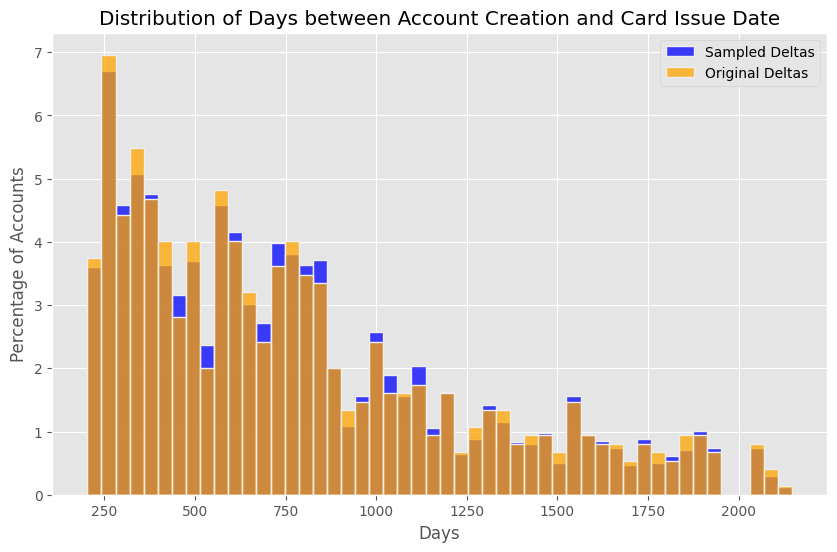
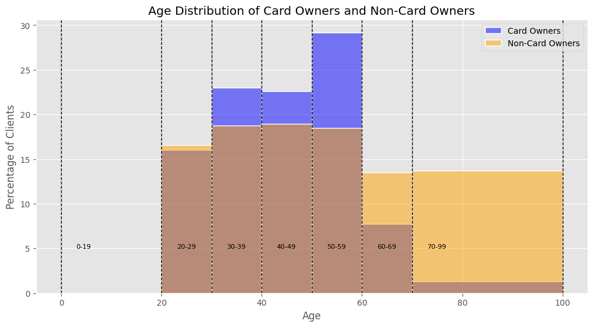
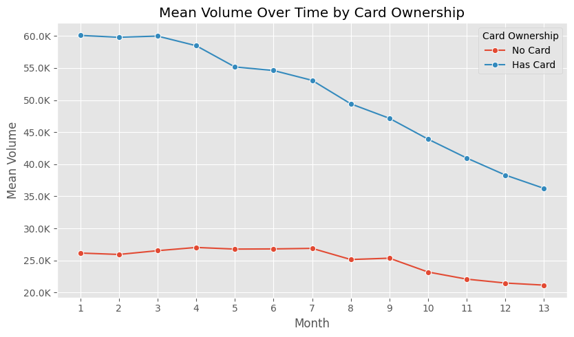

import numpy as np
import sys
import pandas as pd
import plotly.graph_objects as go
import plotly.io as pio
import seaborn as sns
from plotly.subplots import make_subplots
from matplotlib import pyplot as plt
plt.style.use('ggplot')
pio.templates.default = 'ggplot2'
pd.set_option('display.max_columns', None)
sys.path.append('scripts')
from dataloader import DataLoaderCross-Selling of Credit Cards
Author: Nils Fahrni
Data Preprocessing
Data Loading
data_loader = DataLoader(base_path='data', translations_name='translation_mappings.json')
data_loader.list_datasets()| Dataset | Number of Rows | |
|---|---|---|
| 0 | loan | 682 |
| 1 | client | 5369 |
| 2 | district | 77 |
| 3 | trans | 1056320 |
| 4 | account | 4500 |
| 5 | card | 892 |
| 6 | order | 6471 |
| 7 | disp | 5369 |
Account
account = data_loader.load_csv('account', parse_dates={'date': '%y%m%d'})
account.sample(5)Mapped frequency:
{
"POPLATEK MESICNE": "MONTHLY CHARGES",
"POPLATEK TYDNE": "WEEKLY CHARGES",
"POPLATEK PO OBRATU": "TRANSACTION CHARGES"
}| account_id | district_id | frequency | date | |
|---|---|---|---|---|
| 3269 | 1155 | 43 | MONTHLY CHARGES | 1996-10-04 |
| 3570 | 2875 | 19 | MONTHLY CHARGES | 1996-12-24 |
| 2299 | 3442 | 4 | MONTHLY CHARGES | 1996-01-16 |
| 4259 | 1438 | 23 | WEEKLY CHARGES | 1997-09-18 |
| 3027 | 1267 | 43 | MONTHLY CHARGES | 1996-08-05 |
Client
client = data_loader.load_csv('client')
client = client.assign(gender=client['birth_number'].apply(lambda x: 'FEMALE' if int(str(x)[2:4]) > 50 else 'MALE'))
client = client.assign(birth_number=client.apply(lambda x: x['birth_number'] - 5000 if x['gender'] == 'FEMALE' else x['birth_number'], axis=1))
client['birth_number'] = pd.to_datetime(client['birth_number'], format='%y%m%d')
client['birth_date'] = client['birth_number'].apply(lambda x: x - pd.DateOffset(years=100) if x.year > 1999 else x)
client.drop('birth_number', axis=1, inplace=True)
client['age'] = (pd.to_datetime('1999-12-31') - client['birth_date']).dt.days // 365
client.sample(5)| client_id | district_id | gender | birth_date | age | |
|---|---|---|---|---|---|
| 2523 | 2663 | 8 | MALE | 1976-10-01 | 23 |
| 720 | 753 | 72 | FEMALE | 1940-09-24 | 59 |
| 4624 | 5081 | 1 | FEMALE | 1961-10-31 | 38 |
| 3254 | 3438 | 43 | MALE | 1942-01-12 | 58 |
| 562 | 589 | 45 | MALE | 1961-09-17 | 38 |
Disposition
Removing disponents as the goal is to only advertise to owners. Disponents may be secondary users that have been authorized to use an account. They may be allowed to execute transactions on that account but they are not the authorized owners.
disp = data_loader.load_csv('disp')
disp = disp[disp['type'] != 'DISPONENT']
disp.drop('type', axis=1, inplace=True)
disp.sample(5)| disp_id | client_id | account_id | |
|---|---|---|---|
| 4231 | 4476 | 4476 | 3712 |
| 4871 | 6967 | 6967 | 5758 |
| 3734 | 3946 | 3946 | 3261 |
| 5098 | 10167 | 10475 | 8489 |
| 2618 | 2770 | 2770 | 2289 |
Permanent Order
order = data_loader.load_csv('order')
order.sample(5)Mapped k_symbol:
{
"POJISTNE": "INSURANCE PAYMENT",
"SIPO": "HOUSEHOLD",
"LEASING": "LEASING",
"UVER": "LOAN PAYMENT"
}| order_id | account_id | bank_to | account_to | amount | k_symbol | |
|---|---|---|---|---|---|---|
| 553 | 30005 | 396 | GH | 26179212 | 68.0 | NaN |
| 5945 | 41042 | 7844 | UV | 97729610 | 3816.0 | LOAN PAYMENT |
| 1459 | 30998 | 1097 | OP | 95009862 | 7636.0 | HOUSEHOLD |
| 825 | 30292 | 611 | AB | 98749815 | 2284.0 | HOUSEHOLD |
| 532 | 29979 | 382 | IJ | 24703598 | 2235.0 | HOUSEHOLD |
Are there Null Values?
display(order.isnull().sum())
display(order[order['k_symbol'].isnull()].sample(5))order_id 0
account_id 0
bank_to 0
account_to 0
amount 0
k_symbol 1379
dtype: int64| order_id | account_id | bank_to | account_to | amount | k_symbol | |
|---|---|---|---|---|---|---|
| 4038 | 33864 | 3011 | WX | 47335153 | 138.0 | NaN |
| 5266 | 35234 | 3955 | GH | 24978786 | 997.0 | NaN |
| 1277 | 30795 | 953 | OP | 89555656 | 185.0 | NaN |
| 4944 | 34883 | 3721 | AB | 86966162 | 132.0 | NaN |
| 4825 | 34749 | 3626 | CD | 85035067 | 5156.0 | NaN |
order['k_symbol'] = order['k_symbol'].fillna('MISSING')
order_pivot = order.pivot_table(index='account_id', columns='k_symbol', values='amount', aggfunc='count', fill_value=0)
order_pivot.sample(5)| k_symbol | HOUSEHOLD | INSURANCE PAYMENT | LEASING | LOAN PAYMENT | MISSING |
|---|---|---|---|---|---|
| account_id | |||||
| 5422 | 1 | 1 | 0 | 1 | 1 |
| 5593 | 1 | 0 | 0 | 1 | 0 |
| 2609 | 0 | 0 | 1 | 0 | 0 |
| 3370 | 0 | 0 | 1 | 0 | 0 |
| 2388 | 1 | 0 | 0 | 0 | 0 |
Transaction
TODO: - amount to negative or positive based on if withdrawal or deposit - Research account number 19 (time series account balance, at least per month) - this acc is volatile - account’s balance goes negative sometimes - what happens to accounts with multiple transactions on a day? - how to obtain the actual end of day balance? - add up withdrawals with deposits and add to balance of day before - try to vectorize this problem (R antijoin mentioned)
transaction = data_loader.load_csv('trans', parse_dates={'date': '%y%m%d'})
transaction.sample(5)Mapped type:
{
"PRIJEM": "CREDIT",
"VYDAJ": "WITHDRAWAL"
}
Mapped operation:
{
"VYBER KARTOU": "CREDIT CARD WITHDRAWAL",
"VKLAD": "CREDIT IN CASH",
"PREVOD Z UCTU": "COLLECTION FROM ANOTHER BANK",
"VYBER": "WITHDRAWAL IN CASH",
"PREVOD NA UCET": "REMITTANCE TO ANOTHER BANK"
}
Mapped k_symbol:
{
"POJISTNE": "INSURANCE PAYMENT",
"SLUZBY": "PAYMENT FOR STATEMENT",
"UROK": "INTEREST CREDITED",
"SANKC. UROK": "SANCTION INTEREST IF NEGATIVE BALANCE",
"SIPO": "HOUSEHOLD",
"DUCHOD": "OLD-AGE PENSION",
"UVER": "LOAN PAYMENT"
}| trans_id | account_id | date | type | operation | amount | balance | k_symbol | bank | account | |
|---|---|---|---|---|---|---|---|---|---|---|
| 687549 | 1132865 | 3871 | 1997-11-09 | WITHDRAWAL | REMITTANCE TO ANOTHER BANK | 1505.0 | 39867.3 | NaN | AB | 64580011.0 |
| 664111 | 318992 | 1089 | 1997-10-10 | WITHDRAWAL | REMITTANCE TO ANOTHER BANK | 2962.0 | 25549.0 | NaN | QR | 13997078.0 |
| 410982 | 1170848 | 4014 | 1996-11-05 | WITHDRAWAL | WITHDRAWAL IN CASH | 23800.0 | 40173.2 | NaN | NaN | NaN |
| 639280 | 47365 | 159 | 1997-09-09 | WITHDRAWAL | REMITTANCE TO ANOTHER BANK | 8694.0 | 35256.1 | HOUSEHOLD | GH | 1882386.0 |
| 317881 | 323671 | 1106 | 1996-05-10 | CREDIT | CREDIT IN CASH | 5285.0 | 65819.6 | NaN | NaN | NaN |
Loan
loan = data_loader.load_csv('loan', parse_dates={'date': '%y%m%d'})
loan.sample(5)Mapped status:
{
"A": "contract finished, no problems",
"B": "contract finished, loan not payed",
"C": "running contract, OK so far",
"D": "running contract, client in debt"
}| loan_id | account_id | date | amount | duration | payments | status | |
|---|---|---|---|---|---|---|---|
| 381 | 5072 | 472 | 1997-04-28 | 196800 | 24 | 8200.0 | running contract, client in debt |
| 206 | 6545 | 7606 | 1995-12-12 | 191880 | 60 | 3198.0 | running contract, OK so far |
| 613 | 5527 | 2728 | 1998-06-15 | 156420 | 60 | 2607.0 | running contract, OK so far |
| 152 | 6745 | 8625 | 1995-04-10 | 47304 | 24 | 1971.0 | contract finished, no problems |
| 570 | 5773 | 3907 | 1998-03-16 | 133848 | 24 | 5577.0 | running contract, OK so far |
Can an account have multiple loans?
print(f'Are there accounts with multiple loans: {loan["account_id"].nunique() < loan.shape[0]}')Are there accounts with multiple loans: FalseCredit Card
card = data_loader.load_csv('card', parse_dates={'issued': '%y%m%d'})
card.sample(5)| card_id | disp_id | type | issued | |
|---|---|---|---|---|
| 338 | 355 | 2267 | classic | 1997-08-28 |
| 360 | 622 | 3981 | junior | 1997-09-22 |
| 370 | 698 | 4522 | gold | 1997-10-07 |
| 135 | 303 | 1912 | classic | 1996-08-01 |
| 94 | 14 | 112 | classic | 1996-02-17 |
District
district = data_loader.load_csv('district')
district = district.rename(columns={
'A1': 'district_id',
'A2': 'district_name',
'A3': 'region',
'A4': 'population',
'A5': 'n_municipalities_with_inhabitants_lt_499',
'A6': 'n_municipalities_with_inhabitants_500_to_1999',
'A7': 'n_municipalities_with_inhabitants_2000_to_9999',
'A8': 'n_municipalities_with_inhabitants_gt_10000',
'A9': 'n_cities',
'A10': 'ratio_urban_inhabitants',
'A11': 'average_salary',
'A12': 'unemployment_rate_95',
'A13': 'unemployment_rate_96',
'A14': 'enterpreneurs_per_1000_inhabitants',
'A15': 'n_commited_crimes_95',
'A16': 'n_commited_crimes_96'
})
district.sample(5)| district_id | district_name | region | population | n_municipalities_with_inhabitants_lt_499 | n_municipalities_with_inhabitants_500_to_1999 | n_municipalities_with_inhabitants_2000_to_9999 | n_municipalities_with_inhabitants_gt_10000 | n_cities | ratio_urban_inhabitants | average_salary | unemployment_rate_95 | unemployment_rate_96 | enterpreneurs_per_1000_inhabitants | n_commited_crimes_95 | n_commited_crimes_96 | |
|---|---|---|---|---|---|---|---|---|---|---|---|---|---|---|---|---|
| 60 | 61 | Trebic | south Moravia | 117897 | 139 | 28 | 5 | 1 | 6 | 53.8 | 8814 | 4.76 | 5.74 | 107 | 2112 | 2059 |
| 11 | 12 | Pribram | central Bohemia | 107870 | 84 | 29 | 6 | 1 | 6 | 58.0 | 8754 | 3.83 | 4.31 | 137 | 3804 | 3868 |
| 17 | 18 | Pisek | south Bohemia | 70699 | 60 | 13 | 2 | 1 | 4 | 65.3 | 8968 | 2.83 | 3.35 | 131 | 1740 | 1910 |
| 41 | 42 | Havlickuv Brod | east Bohemia | 95907 | 87 | 25 | 5 | 2 | 7 | 59.1 | 8388 | 2.41 | 2.94 | 87 | 1658 | 1668 |
| 18 | 19 | Prachatice | south Bohemia | 51428 | 50 | 11 | 3 | 1 | 4 | 52.7 | 8402 | 3.13 | 3.98 | 120 | 999 | 1099 |
Data Merging
from utils import add_prefix_except_id
account = add_prefix_except_id(account, 'account_', id_exceptions=['district_id'])
client_df = disp.merge(account, on='account_id', how='left')
client = add_prefix_except_id(client, 'client_', id_exceptions=['district_id'])
client_df = client_df.merge(client, on='client_id', how='left')
order_pivot = add_prefix_except_id(order_pivot, 'ordertype_')
client_df = client_df.merge(order_pivot, on='account_id', how='left')
loan = add_prefix_except_id(loan, 'loan_')
client_df = client_df.merge(loan, on='account_id', how='left')
card = add_prefix_except_id(card, 'card_')
client_df = client_df.merge(card, on='disp_id', how='left')
client_district = add_prefix_except_id(district, 'client_district_')
client_df = client_df.merge(client_district, left_on='client_district_id', right_on='district_id', how='left')
account_district = add_prefix_except_id(district, 'account_district_')
client_df = client_df.merge(account_district, left_on='account_district_id', right_on='district_id', how='left')
client_df.sample(5)
n_merged_base_client = client_df.shape[0]assert client_df['account_id'].nunique() == client_df.shape[0]Data Cleaning
Removing Junior Cards
junior_clients = client_df[client_df['card_type'] == 'junior']
client_df = client_df[~client_df['account_id'].isin(junior_clients['account_id'])]
transaction = transaction[~transaction['account_id'].isin(junior_clients['account_id'])]
client_df['has_card'] = client_df['card_id'].notnull()
print(f'Number of junior clients: {junior_clients.shape[0]}')
print(f'Number of clients remaining: {client_df.shape[0]}')Number of junior clients: 145
Number of clients remaining: 4355Model Construction
Processing Transactional Data
- The goal is to predict if a non-card-owner will buy a card or not
The first task is to look if every account in the transactions dataframe has a “first transaction”. This would make the calculation of the monthly balance much easier since everything can be summed up without having to worry that there were months without records in the transaction dataframe.
# Find the minimum (first) transaction(s) date for each account
min_dates = transaction.groupby('account_id')['date'].min().reset_index()
min_dates.rename(columns={'date': 'min_date'}, inplace=True)
# Merge the minimum date back to the transactions to identify all transactions on the first day
transactions_with_min_date = pd.merge(transaction, min_dates, on='account_id')
# Filter transactions that are on the first day
first_day_transactions = transactions_with_min_date[transactions_with_min_date['date'] == transactions_with_min_date['min_date']]
first_day_transactions = first_day_transactions.copy()
# Now, for each of these first day transactions, check if any have amount equals balance
first_day_transactions['amount_equals_balance'] = first_day_transactions['amount'] == first_day_transactions['balance']
# Group by account_id and check if any transactions for each account meet the condition
accounts_meeting_condition = first_day_transactions.groupby('account_id')['amount_equals_balance'].any().reset_index()
# Verify if all accounts have at least one transaction on the first day meeting the condition
all_accounts_covered = accounts_meeting_condition['amount_equals_balance'].all()
print("Does every account's first day of transactions include at least one transaction where amount equals balance?", all_accounts_covered)Does every account's first day of transactions include at least one transaction where amount equals balance? TrueNow every accounts balance needs to be calculated per month.
transaction['month'] = transaction['date'].dt.to_period('M')
transactions_monthly = transaction.groupby(['account_id', 'month']).agg(
volume=('amount', 'sum'),
credit=('amount', lambda x: x[x > 0].sum()),
withdrawal=('amount', lambda x: x[x < 0].sum()),
n_transactions=('amount', 'size')
).reset_index()transactions_monthly['month'] = pd.PeriodIndex(transactions_monthly['month'])
date_ranges = transactions_monthly.groupby('account_id')['month'].agg(['min', 'max'])
def reindex_df(group, account_id):
idx = pd.period_range(start=group['month'].min(), end=group['month'].max(), freq='M')
group.set_index('month', inplace=True)
group = group.reindex(idx, fill_value=0)
group.reset_index(inplace=True)
group.rename(columns={'index': 'month'}, inplace=True)
group['account_id'] = account_id
return group
transactions_monthly = (transactions_monthly.groupby('account_id')
.apply(lambda x: reindex_df(x, x.name))
.reset_index(level=0, drop=True))
# Calculate cumulative balance
transactions_monthly['balance'] = transactions_monthly.groupby('account_id')['volume'].cumsum()/var/folders/th/yt_529gn5qj62429rgx8mqzc0000gn/T/ipykernel_70086/3639110262.py:15: DeprecationWarning: DataFrameGroupBy.apply operated on the grouping columns. This behavior is deprecated, and in a future version of pandas the grouping columns will be excluded from the operation. Either pass `include_groups=False` to exclude the groupings or explicitly select the grouping columns after groupby to silence this warning.
.apply(lambda x: reindex_df(x, x.name))transactions_monthly| month | account_id | volume | credit | withdrawal | n_transactions | balance | |
|---|---|---|---|---|---|---|---|
| 0 | 1995-03 | 1 | 1000.0 | 1000.0 | 0.0 | 1 | 1000.0 |
| 1 | 1995-04 | 1 | 16298.2 | 16298.2 | 0.0 | 3 | 17298.2 |
| 2 | 1995-05 | 1 | 5858.0 | 5858.0 | 0.0 | 3 | 23156.2 |
| 3 | 1995-06 | 1 | 3979.6 | 3979.6 | 0.0 | 3 | 27135.8 |
| 4 | 1995-07 | 1 | 9087.9 | 9087.9 | 0.0 | 3 | 36223.7 |
| ... | ... | ... | ... | ... | ... | ... | ... |
| 36 | 1998-08 | 11382 | 54569.5 | 54569.5 | 0.0 | 7 | 2386853.6 |
| 37 | 1998-09 | 11382 | 44120.0 | 44120.0 | 0.0 | 5 | 2430973.6 |
| 38 | 1998-10 | 11382 | 63262.2 | 63262.2 | 0.0 | 6 | 2494235.8 |
| 39 | 1998-11 | 11382 | 50165.7 | 50165.7 | 0.0 | 5 | 2544401.5 |
| 40 | 1998-12 | 11382 | 78760.4 | 78760.4 | 0.0 | 5 | 2623161.9 |
179054 rows × 7 columns
Defining Roll-Up Windows of Transactions
Before we can continue to filter out customers that have at least 13 Months of transaction history it is also needed to give non-customers a fictional card_issued date so we can build negative samples that also contain a 13-Month rollup window.
clients_with_cards = client_df[~client_df['card_issued'].isnull()]
time_between_creation_and_issue = (clients_with_cards['card_issued'] - clients_with_cards['account_date']).dt.days
plt.figure(figsize=(10, 6))
sns.histplot(time_between_creation_and_issue, bins=50, stat='percent', kde=False, color='blue', linewidth=1)
plt.title('Distribution of Card Issuance Dates')
plt.xlabel('Days')
plt.ylabel('Percentage of Accounts')
plt.grid(True)
plt.show()An observation we can make when looking at the distribution of when cards usually get issued after the account creation is that there don’t seem to be any issuances before day 200 of the account.
np.random.seed(1337)
sampled_deltas = np.random.choice(time_between_creation_and_issue, size=len(client_df[client_df['card_issued'].isnull()]))
plt.figure(figsize=(10, 6))
sns.histplot(sampled_deltas, bins=50, stat='percent', kde=False, color='blue', linewidth=1, label='Sampled Deltas')
sns.histplot(time_between_creation_and_issue, bins=50, stat='percent', kde=False, color='orange', linewidth=1, label='Original Deltas')
plt.title('Distribution of Card Issuance Dates')
plt.xlabel('Days')
plt.ylabel('Percentage of Accounts')
plt.legend()
plt.grid(True)
plt.show()
if len(client_df[client_df['card_issued'].isnull()]) > 0:
client_df.loc[client_df['card_issued'].isnull(), 'card_issued'] = client_df.loc[client_df['card_issued'].isnull(), 'account_date'] + pd.to_timedelta(sampled_deltas, unit='D')
print(f'Number of NaT/NaN values in card_issued: {client_df["card_issued"].isnull().sum()}')Number of NaT/NaN values in card_issued: 0card_issued = card.groupby('disp_id')['card_issued'].min().reset_index()
card_issued.head(5)| disp_id | card_issued | |
|---|---|---|
| 0 | 9 | 1998-10-16 |
| 1 | 19 | 1998-03-13 |
| 2 | 41 | 1995-09-03 |
| 3 | 42 | 1998-11-26 |
| 4 | 51 | 1995-04-24 |
client_df[client_df['disp_id'].isnull()].shape[0]
transactions_monthly.info()<class 'pandas.core.frame.DataFrame'>
Index: 179054 entries, 0 to 40
Data columns (total 7 columns):
# Column Non-Null Count Dtype
--- ------ -------------- -----
0 month 179054 non-null period[M]
1 account_id 179054 non-null int64
2 volume 179054 non-null float64
3 credit 179054 non-null float64
4 withdrawal 179054 non-null float64
5 n_transactions 179054 non-null int64
6 balance 179054 non-null float64
dtypes: float64(4), int64(2), period[M](1)
memory usage: 10.9 MBtransactions_monthly = transactions_monthly.merge(client_df[['account_id', 'card_issued']], left_on='account_id', right_on='account_id', how='left')
transactions_monthly.head()| month | account_id | volume | credit | withdrawal | n_transactions | balance | card_issued | |
|---|---|---|---|---|---|---|---|---|
| 0 | 1995-03 | 1 | 1000.0 | 1000.0 | 0.0 | 1 | 1000.0 | 1998-09-18 |
| 1 | 1995-04 | 1 | 16298.2 | 16298.2 | 0.0 | 3 | 17298.2 | 1998-09-18 |
| 2 | 1995-05 | 1 | 5858.0 | 5858.0 | 0.0 | 3 | 23156.2 | 1998-09-18 |
| 3 | 1995-06 | 1 | 3979.6 | 3979.6 | 0.0 | 3 | 27135.8 | 1998-09-18 |
| 4 | 1995-07 | 1 | 9087.9 | 9087.9 | 0.0 | 3 | 36223.7 | 1998-09-18 |
Now, let’s see if the join worked correctly and we don’t have any transactions without a card_issued date anymore.
assert transactions_monthly['card_issued'].isnull().sum() == 0Validating Negative Examples
The goal for our model will be to be able to learn from a base set of customers (with and without cards) that lived through the same economic circumstances. To validate that all customers in our current set are represented in a well distributed way, this next plot looks at the distribution of volume throughout the datasets timeframe.
transactions_monthly['has_card'] = transactions_monthly['account_id'].isin(client_df[client_df['has_card']]['account_id'])transactions_monthly.reset_index(inplace=True)
transactions_monthly['id'] = range(len(transactions_monthly))
transactions_monthly.set_index('id', inplace=True)transactions_with_cards = transactions_monthly[transactions_monthly['has_card'] == True]
transactions_without_cards = transactions_monthly[transactions_monthly['has_card'] == False]
grouped_with_cards = transactions_with_cards.groupby('month')['volume'].sum().reset_index()
grouped_without_cards = transactions_without_cards.groupby('month')['volume'].sum().reset_index()
grouped_with_cards['month'] = grouped_with_cards['month'].astype(str)
grouped_without_cards['month'] = grouped_without_cards['month'].astype(str)
grouped_with_cards['avg_volume_per_client'] = grouped_with_cards['volume'] / transactions_with_cards.shape[0]
grouped_without_cards['avg_volume_per_client'] = grouped_without_cards['volume'] / transactions_without_cards.shape[0]
plt.figure(figsize=(12, 6))
sns.lineplot(x='month', y='avg_volume_per_client', data=grouped_with_cards, marker='o', label='Clients with Cards')
sns.lineplot(x='month', y='avg_volume_per_client', data=grouped_without_cards, marker='o', label='Clients without Cards')
plt.title('Transaction Volume per Month')
plt.xlabel('Month')
plt.ylabel('Average Transaction Volume per Client ($)')
plt.legend()
plt.grid(True)
plt.xticks(ticks=grouped_with_cards['month'][grouped_with_cards['month'].str.endswith('-01')], rotation=45)
plt.gca().set_xticklabels([label[:4] for label in grouped_with_cards['month'][grouped_with_cards['month'].str.endswith('-01')]])
plt.show()transactions_monthly['card_issued'] = pd.to_datetime(transactions_monthly['card_issued'])
transactions_monthly['card_issued_period'] = transactions_monthly['card_issued'].dt.to_period('M')
transactions_monthly['month_diff'] = transactions_monthly.apply(lambda row: (row['card_issued_period'] - row['month']).n if pd.notnull(row['card_issued_period']) and pd.notnull(row['month']) else None, axis=1)
filtered_transactions = transactions_monthly[transactions_monthly['month_diff'].between(1, 13)]transactions_monthly| index | month | account_id | volume | credit | withdrawal | n_transactions | balance | card_issued | has_card | card_issued_period | month_diff | |
|---|---|---|---|---|---|---|---|---|---|---|---|---|
| id | ||||||||||||
| 0 | 0 | 1995-03 | 1 | 1000.0 | 1000.0 | 0.0 | 1 | 1000.0 | 1998-09-18 | False | 1998-09 | 42 |
| 1 | 1 | 1995-04 | 1 | 16298.2 | 16298.2 | 0.0 | 3 | 17298.2 | 1998-09-18 | False | 1998-09 | 41 |
| 2 | 2 | 1995-05 | 1 | 5858.0 | 5858.0 | 0.0 | 3 | 23156.2 | 1998-09-18 | False | 1998-09 | 40 |
| 3 | 3 | 1995-06 | 1 | 3979.6 | 3979.6 | 0.0 | 3 | 27135.8 | 1998-09-18 | False | 1998-09 | 39 |
| 4 | 4 | 1995-07 | 1 | 9087.9 | 9087.9 | 0.0 | 3 | 36223.7 | 1998-09-18 | False | 1998-09 | 38 |
| ... | ... | ... | ... | ... | ... | ... | ... | ... | ... | ... | ... | ... |
| 179049 | 179049 | 1998-08 | 11382 | 54569.5 | 54569.5 | 0.0 | 7 | 2386853.6 | 1996-09-30 | False | 1996-09 | -23 |
| 179050 | 179050 | 1998-09 | 11382 | 44120.0 | 44120.0 | 0.0 | 5 | 2430973.6 | 1996-09-30 | False | 1996-09 | -24 |
| 179051 | 179051 | 1998-10 | 11382 | 63262.2 | 63262.2 | 0.0 | 6 | 2494235.8 | 1996-09-30 | False | 1996-09 | -25 |
| 179052 | 179052 | 1998-11 | 11382 | 50165.7 | 50165.7 | 0.0 | 5 | 2544401.5 | 1996-09-30 | False | 1996-09 | -26 |
| 179053 | 179053 | 1998-12 | 11382 | 78760.4 | 78760.4 | 0.0 | 5 | 2623161.9 | 1996-09-30 | False | 1996-09 | -27 |
179054 rows × 12 columns
filtered_transactions.sort_values(by=['account_id', 'month_diff'])| index | month | account_id | volume | credit | withdrawal | n_transactions | balance | card_issued | has_card | card_issued_period | month_diff | |
|---|---|---|---|---|---|---|---|---|---|---|---|---|
| id | ||||||||||||
| 41 | 41 | 1998-08 | 1 | 6492.7 | 6492.7 | 0.0 | 5 | 338855.2 | 1998-09-18 | False | 1998-09 | 1 |
| 40 | 40 | 1998-07 | 1 | 6221.0 | 6221.0 | 0.0 | 4 | 332362.5 | 1998-09-18 | False | 1998-09 | 2 |
| 39 | 39 | 1998-06 | 1 | 6667.1 | 6667.1 | 0.0 | 5 | 326141.5 | 1998-09-18 | False | 1998-09 | 3 |
| 38 | 38 | 1998-05 | 1 | 6212.3 | 6212.3 | 0.0 | 4 | 319474.4 | 1998-09-18 | False | 1998-09 | 4 |
| 37 | 37 | 1998-04 | 1 | 7435.5 | 7435.5 | 0.0 | 6 | 313262.1 | 1998-09-18 | False | 1998-09 | 5 |
| ... | ... | ... | ... | ... | ... | ... | ... | ... | ... | ... | ... | ... |
| 179017 | 179017 | 1995-12 | 11382 | 82563.6 | 82563.6 | 0.0 | 4 | 221665.9 | 1996-09-30 | False | 1996-09 | 9 |
| 179016 | 179016 | 1995-11 | 11382 | 51280.6 | 51280.6 | 0.0 | 4 | 139102.3 | 1996-09-30 | False | 1996-09 | 10 |
| 179015 | 179015 | 1995-10 | 11382 | 49912.3 | 49912.3 | 0.0 | 4 | 87821.7 | 1996-09-30 | False | 1996-09 | 11 |
| 179014 | 179014 | 1995-09 | 11382 | 37709.4 | 37709.4 | 0.0 | 4 | 37909.4 | 1996-09-30 | False | 1996-09 | 12 |
| 179013 | 179013 | 1995-08 | 11382 | 200.0 | 200.0 | 0.0 | 1 | 200.0 | 1996-09-30 | False | 1996-09 | 13 |
44962 rows × 12 columns
Pivoting the transactions
An issue at this point can be that an account may have months without any transactions, so there needs to be a more thorough process to interpolate the data: - Volume, Withdrawal, Credit and Number of Transactions: If there are missing months in these variables we can just set 0 as their value as there has not been any activity if there were no recorded months. - Balance: The balance will get recursively set to the last preceding recorded month. So if there are consecutive “missing†months in transactions the balance will always be set to the last recorded month.
account_summary = pd.DataFrame(filtered_transactions['account_id'].unique(), columns=['account_id'])
variables_to_pivot = ['volume', 'withdrawal', 'credit', 'n_transactions', 'balance']
for variable in variables_to_pivot:
grouped = filtered_transactions.groupby(['account_id', 'month_diff'])[variable].sum().reset_index()
pivot = grouped.pivot(index='account_id', columns='month_diff', values=variable).reset_index()
pivot.columns = ['account_id'] + [f'{variable}_month_diff_{int(col)}' if col != 'account_id' else 'account_id' for col in pivot.columns[1:]]
account_summary = pd.merge(account_summary, pivot, on='account_id', how='left')
for variable in ['volume', 'withdrawal', 'credit', 'n_transactions']:
account_summary.update(account_summary.filter(regex=f'^{variable}_').fillna(0))
def find_last_balance(account_id, starting_month_diff):
higher_month_diff = transactions_monthly[
(transactions_monthly['account_id'] == account_id) &
(transactions_monthly['month_diff'] >= starting_month_diff)
].sort_values('month_diff')
last_balance_row = higher_month_diff[higher_month_diff['balance'].notna()].head(1)
if not last_balance_row.empty:
return last_balance_row.iloc[0]['balance']
else:
return 0
balance_columns = [col for col in account_summary.columns if 'balance_month_diff_' in col]
for idx, row in account_summary.iterrows():
for col in balance_columns:
if pd.isna(row[col]):
month_diff = int(col.split('_')[-1])
last_balance = find_last_balance(row['account_id'], month_diff + 1)
account_summary.at[idx, col] = last_balanceaccount_summary.head()| account_id | volume_month_diff_1 | volume_month_diff_2 | volume_month_diff_3 | volume_month_diff_4 | volume_month_diff_5 | volume_month_diff_6 | volume_month_diff_7 | volume_month_diff_8 | volume_month_diff_9 | volume_month_diff_10 | volume_month_diff_11 | volume_month_diff_12 | volume_month_diff_13 | withdrawal_month_diff_1 | withdrawal_month_diff_2 | withdrawal_month_diff_3 | withdrawal_month_diff_4 | withdrawal_month_diff_5 | withdrawal_month_diff_6 | withdrawal_month_diff_7 | withdrawal_month_diff_8 | withdrawal_month_diff_9 | withdrawal_month_diff_10 | withdrawal_month_diff_11 | withdrawal_month_diff_12 | withdrawal_month_diff_13 | credit_month_diff_1 | credit_month_diff_2 | credit_month_diff_3 | credit_month_diff_4 | credit_month_diff_5 | credit_month_diff_6 | credit_month_diff_7 | credit_month_diff_8 | credit_month_diff_9 | credit_month_diff_10 | credit_month_diff_11 | credit_month_diff_12 | credit_month_diff_13 | n_transactions_month_diff_1 | n_transactions_month_diff_2 | n_transactions_month_diff_3 | n_transactions_month_diff_4 | n_transactions_month_diff_5 | n_transactions_month_diff_6 | n_transactions_month_diff_7 | n_transactions_month_diff_8 | n_transactions_month_diff_9 | n_transactions_month_diff_10 | n_transactions_month_diff_11 | n_transactions_month_diff_12 | n_transactions_month_diff_13 | balance_month_diff_1 | balance_month_diff_2 | balance_month_diff_3 | balance_month_diff_4 | balance_month_diff_5 | balance_month_diff_6 | balance_month_diff_7 | balance_month_diff_8 | balance_month_diff_9 | balance_month_diff_10 | balance_month_diff_11 | balance_month_diff_12 | balance_month_diff_13 | |
|---|---|---|---|---|---|---|---|---|---|---|---|---|---|---|---|---|---|---|---|---|---|---|---|---|---|---|---|---|---|---|---|---|---|---|---|---|---|---|---|---|---|---|---|---|---|---|---|---|---|---|---|---|---|---|---|---|---|---|---|---|---|---|---|---|---|---|
| 0 | 1 | 6492.7 | 6221.0 | 6667.1 | 6212.3 | 7435.5 | 7018.6 | 6701.9 | 9091.5 | 10907.2 | 7318.0 | 6218.0 | 6600.6 | 8282.7 | 0.0 | 0.0 | 0.0 | 0.0 | 0.0 | 0.0 | 0.0 | 0.0 | 0.0 | 0.0 | 0.0 | 0.0 | 0.0 | 6492.7 | 6221.0 | 6667.1 | 6212.3 | 7435.5 | 7018.6 | 6701.9 | 9091.5 | 10907.2 | 7318.0 | 6218.0 | 6600.6 | 8282.7 | 5.0 | 4.0 | 5.0 | 4.0 | 6.0 | 5.0 | 5.0 | 10.0 | 5.0 | 5.0 | 4.0 | 5.0 | 6.0 | 338855.2 | 332362.5 | 326141.5 | 319474.4 | 313262.1 | 305826.6 | 298808.0 | 292106.1 | 283014.6 | 272107.4 | 264789.4 | 258571.4 | 251970.8 |
| 1 | 2 | 34617.6 | 45943.4 | 52856.1 | 47098.6 | 52913.9 | 37980.7 | 31345.5 | 23949.5 | 1100.0 | 0.0 | 0.0 | 0.0 | 0.0 | 0.0 | 0.0 | 0.0 | 0.0 | 0.0 | 0.0 | 0.0 | 0.0 | 0.0 | 0.0 | 0.0 | 0.0 | 0.0 | 34617.6 | 45943.4 | 52856.1 | 47098.6 | 52913.9 | 37980.7 | 31345.5 | 23949.5 | 1100.0 | 0.0 | 0.0 | 0.0 | 0.0 | 6.0 | 7.0 | 7.0 | 6.0 | 3.0 | 3.0 | 3.0 | 3.0 | 1.0 | 0.0 | 0.0 | 0.0 | 0.0 | 327805.3 | 293187.7 | 247244.3 | 194388.2 | 147289.6 | 94375.7 | 56395.0 | 25049.5 | 1100.0 | 0.0 | 0.0 | 0.0 | 0.0 |
| 2 | 4 | 10917.6 | 12013.8 | 9011.7 | 14254.5 | 11343.0 | 9015.0 | 10769.2 | 9003.4 | 20249.4 | 13529.7 | 9040.6 | 9031.2 | 12329.5 | 0.0 | 0.0 | 0.0 | 0.0 | 0.0 | 0.0 | 0.0 | 0.0 | 0.0 | 0.0 | 0.0 | 0.0 | 0.0 | 10917.6 | 12013.8 | 9011.7 | 14254.5 | 11343.0 | 9015.0 | 10769.2 | 9003.4 | 20249.4 | 13529.7 | 9040.6 | 9031.2 | 12329.5 | 6.0 | 6.0 | 5.0 | 6.0 | 7.0 | 5.0 | 6.0 | 5.0 | 12.0 | 7.0 | 5.0 | 5.0 | 6.0 | 195475.7 | 184558.1 | 172544.3 | 163532.6 | 149278.1 | 137935.1 | 128920.1 | 118150.9 | 109147.5 | 88898.1 | 75368.4 | 66327.8 | 57296.6 |
| 3 | 5 | 8607.1 | 7797.2 | 15720.3 | 10825.1 | 7812.5 | 5035.1 | 5017.0 | 5017.0 | 5017.0 | 5017.0 | 600.0 | 0.0 | 0.0 | 0.0 | 0.0 | 0.0 | 0.0 | 0.0 | 0.0 | 0.0 | 0.0 | 0.0 | 0.0 | 0.0 | 0.0 | 0.0 | 8607.1 | 7797.2 | 15720.3 | 10825.1 | 7812.5 | 5035.1 | 5017.0 | 5017.0 | 5017.0 | 5017.0 | 600.0 | 0.0 | 0.0 | 5.0 | 4.0 | 10.0 | 6.0 | 4.0 | 3.0 | 1.0 | 1.0 | 1.0 | 1.0 | 1.0 | 0.0 | 0.0 | 76465.3 | 67858.2 | 60061.0 | 44340.7 | 33515.6 | 25703.1 | 20668.0 | 15651.0 | 10634.0 | 5617.0 | 600.0 | 0.0 | 0.0 |
| 4 | 6 | 14333.0 | 10810.0 | 10798.3 | 11989.9 | 20888.8 | 13055.1 | 10807.0 | 13039.2 | 10792.4 | 23857.9 | 11865.2 | 10815.6 | 10803.9 | 0.0 | 0.0 | 0.0 | 0.0 | 0.0 | 0.0 | 0.0 | 0.0 | 0.0 | 0.0 | 0.0 | 0.0 | 0.0 | 14333.0 | 10810.0 | 10798.3 | 11989.9 | 20888.8 | 13055.1 | 10807.0 | 13039.2 | 10792.4 | 23857.9 | 11865.2 | 10815.6 | 10803.9 | 5.0 | 4.0 | 4.0 | 5.0 | 6.0 | 5.0 | 4.0 | 5.0 | 4.0 | 11.0 | 6.0 | 4.0 | 4.0 | 625481.9 | 611148.9 | 600338.9 | 589540.6 | 577550.7 | 556661.9 | 543606.8 | 532799.8 | 519760.6 | 508968.2 | 485110.3 | 473245.1 | 462429.5 |
client_df = client_df.merge(account_summary, on='account_id', how='inner')Bringing the data together
n_lt_13_month_hist = transactions_monthly['account_id'].nunique()-filtered_transactions['account_id'].nunique()
preprocessing_summary = [
n_merged_base_client,
-len(junior_clients),
-n_lt_13_month_hist,
#-len(non_card_owners)+len(matched_non_buyers_df),
-len(client_df)
]
fig = go.Figure(go.Waterfall(
name = "20", orientation = "v",
measure = ["absolute", "relative", "relative", "relative", "total"],
x = ["Base Client List", "Junior Clients", "Clients with less than 13 Months of Transaction History", "Non-Card-Holders that were not matched on account activity", "Remaining Clients"],
textposition = "outside",
y = preprocessing_summary,
text = [str(x) for x in preprocessing_summary],
connector = {"line":{"color":"rgb(63, 63, 63)"}},
))
fig.update_layout(
title = "Profit and loss statement 2018",
showlegend = True
)
fig.show()Unable to display output for mime type(s): application/vnd.plotly.v1+jsonExploratory Data Analysis
Exploring Missing Values
missing_values = client_df.isnull().sum()
missing_values = pd.DataFrame({
'Number of Missing Values': missing_values[missing_values > 0],
'Percentage of Missing Values': [
f"{x:.2f}%" for x in (missing_values[missing_values > 0] / client_df.shape[0] * 100).round(2)
]
}, columns=['Number of Missing Values', 'Percentage of Missing Values'])
fig = go.Figure()
fig.add_trace(go.Bar(
x=missing_values.index,
y=missing_values['Number of Missing Values'],
text=missing_values['Percentage of Missing Values'],
textposition='auto'
))
fig.update_layout(
title='Missing Values in the Dataset',
xaxis_title='Columns',
yaxis_title='Number of Missing Values'
)
fig.show()Unable to display output for mime type(s): application/vnd.plotly.v1+jsonCardholders vs Non-Cardholders
card_owners = client_df[client_df['has_card']]
non_card_owners = client_df[~client_df['has_card']]data = {
'Card Ownership': ['Card Owners', 'Non-Card Owners'],
'Number of Clients': [card_owners.shape[0], non_card_owners.shape[0]]
}
plt.figure(figsize=(10, 6))
sns.barplot(x='Card Ownership', y='Number of Clients', data=data, palette='viridis', hue='Card Ownership')
for index, value in enumerate(data['Number of Clients']):
plt.text(index, value, str(value), ha='center', va='bottom')
plt.title('Card Owners vs Non-Card Owners')
plt.xlabel('Card Ownership')
plt.ylabel('Number of Clients')
plt.grid(True)
plt.show()Card Types
card_types = card_owners['card_type'].value_counts()
card_types = card_types.reset_index()
card_types.columns = ['Card Type', 'Number of Clients']
plt.figure(figsize=(10, 6))
sns.barplot(x='Card Type', y='Number of Clients', data=card_types, palette='viridis', hue='Card Type')
for index, value in enumerate(card_types['Number of Clients']):
plt.text(index, value, str(value), ha='center', va='bottom')
plt.title('Card Types of Card Owners')
plt.xlabel('Card Type')
plt.ylabel('Number of Clients')
plt.grid(True)
plt.show()Volume before card purchase
classic_card_type_df = card_owners[card_owners['card_type'] == 'classic']
gold_card_type_df = card_owners[card_owners['card_type'] == 'gold']
volume_month_diff_columns = [col for col in account_summary.columns if 'volume_month_diff_' in col]
classic_data = []
gold_data = []
for col in volume_month_diff_columns:
month_num = col.split('_')[-1]
for value in classic_card_type_df[col]:
classic_data.append({'Month': month_num, 'Volume': value, 'Card Type': 'Classic'})
for col in volume_month_diff_columns:
month_num = col.split('_')[-1]
for value in gold_card_type_df[col]:
gold_data.append({'Month': month_num, 'Volume': value, 'Card Type': 'Gold'})
combined_data = classic_data + gold_data
combined_df = pd.DataFrame(combined_data)
fig, axes = plt.subplots(nrows=2, ncols=1, figsize=(12, 14), sharex=True)
sns.boxplot(ax=axes[0], x='Month', y='Volume', data=combined_df[combined_df['Card Type'] == 'Classic'], palette='viridis', hue='Month')
axes[0].set_title('Volume of Transactions for Classic Card Holders')
axes[0].set_xlabel('Months before purchase')
axes[0].set_ylabel('Volume of Transactions')
sns.boxplot(ax=axes[1], x='Month', y='Volume', data=combined_df[combined_df['Card Type'] == 'Gold'], palette='viridis', hue='Month')
axes[1].set_title('Volume of Transactions for Gold Card Holders')
axes[1].set_xlabel('Months before purchase')
axes[1].set_ylabel('Volume of Transactions')
fig.suptitle('Volume of Transactions by Card Type')
plt.tight_layout(rect=[0, 0, 1, 0.97])
plt.show()
Age distribution
# Assuming card_owners and non_card_owners DataFrames are already defined
fig, ax1 = plt.subplots(figsize=(12, 6))
# Plot histograms with percentage normalization on the left y-axis
sns.histplot(card_owners['client_age'], bins=20, stat='percent', kde=False, color='blue', edgecolor='white', linewidth=1, label='Card Owners - Histogram', alpha=0.5, ax=ax1)
sns.histplot(non_card_owners['client_age'], bins=20, stat='percent', kde=False, color='orange', edgecolor='white', linewidth=1, label='Non-Card Owners - Histogram', alpha=0.5, ax=ax1)
# Set up the second y-axis
ax2 = ax1.twinx()
# Plot density plots on the right y-axis
sns.kdeplot(card_owners['client_age'], bw_adjust=0.5, color='blue', label='Card Owners - Density', ax=ax2)
sns.kdeplot(non_card_owners['client_age'], bw_adjust=0.5, color='orange', label='Non-Card Owners - Density', ax=ax2)
# Set the titles and labels
ax1.set_title('Distribution of Client Age')
ax1.set_xlabel('Age')
ax1.set_ylabel('Percentage of Clients')
ax2.set_ylabel('Density')
# Combine legends
handles1, labels1 = ax1.get_legend_handles_labels()
handles2, labels2 = ax2.get_legend_handles_labels()
ax1.legend(handles1 + handles2, labels1 + labels2, loc='upper right')
# Show the plot
plt.grid(True)
plt.show()
Train-Test-Split
from sklearn.model_selection import train_test_split
X = client_df
y = X['has_card']
X = X.drop(columns=['has_card', 'card_id', 'card_issued', 'card_type'])
X_train, X_test, y_train, y_test = train_test_split(X, y, test_size=0.1, random_state=1337)print('Train set:')
print(y_train.value_counts(normalize=True))
print('\nTest set:')
print(y_test.value_counts(normalize=True))Train set:
has_card
False 0.810986
True 0.189014
Name: proportion, dtype: float64
Test set:
has_card
False 0.807595
True 0.192405
Name: proportion, dtype: float64Baseline Model
Erstellen eines Baseline Modelles mittels logistischer Regression und den Informationen “Alter”, “Geschlecht”, “Domizilregion”, “Vermögen†und “Umsatz†vor Kreditkartenkauf.
from scripts.utils import cross_validate, plot_roc_curve, plot_confusion_matrix, plot_lift_curve, plot_precision_recall_curve, plot_metricsfrom sklearn.linear_model import LogisticRegression
from sklearn.pipeline import Pipeline
from sklearn.compose import ColumnTransformer
from sklearn.preprocessing import OneHotEncoder, StandardScaler
baseline_columns = ['client_age', 'client_gender', 'client_district_region']
baseline_column_selection = X_train[baseline_columns]
client_vol_bal_cols = X_train.filter(regex='(volume|balance)', axis=1).columns
baseline_column_selection = pd.concat([baseline_column_selection, X_train[client_vol_bal_cols]], axis=1)
baseline_cat_columns = baseline_column_selection.select_dtypes(include=['object'])
baseline_num_columns = baseline_column_selection.select_dtypes(exclude=['object'])
baseline_column_selection_test = X_test[baseline_columns]
baseline_column_selection_test = pd.concat([baseline_column_selection_test, X_test[client_vol_bal_cols]], axis=1)
baseline_cat_columns_test = baseline_column_selection_test.select_dtypes(include=['object'])
baseline_num_columns_test = baseline_column_selection_test.select_dtypes(exclude=['object'])
preprocessor = ColumnTransformer(
transformers=[
('num', StandardScaler(), baseline_num_columns.columns),
('cat', OneHotEncoder(handle_unknown='ignore'), baseline_cat_columns.columns)
])
base_pipeline = Pipeline([
('preprocessor', preprocessor),
('classifier', LogisticRegression(max_iter=1000))
])baseline_column_selection| client_age | client_gender | client_district_region | volume_month_diff_1 | volume_month_diff_2 | volume_month_diff_3 | volume_month_diff_4 | volume_month_diff_5 | volume_month_diff_6 | volume_month_diff_7 | volume_month_diff_8 | volume_month_diff_9 | volume_month_diff_10 | volume_month_diff_11 | volume_month_diff_12 | volume_month_diff_13 | balance_month_diff_1 | balance_month_diff_2 | balance_month_diff_3 | balance_month_diff_4 | balance_month_diff_5 | balance_month_diff_6 | balance_month_diff_7 | balance_month_diff_8 | balance_month_diff_9 | balance_month_diff_10 | balance_month_diff_11 | balance_month_diff_12 | balance_month_diff_13 | |
|---|---|---|---|---|---|---|---|---|---|---|---|---|---|---|---|---|---|---|---|---|---|---|---|---|---|---|---|---|---|
| 1302 | 81 | FEMALE | south Moravia | 12076.5 | 8388.5 | 19800.3 | 13174.8 | 11693.5 | 8405.5 | 8389.2 | 11500.9 | 8370.4 | 21680.6 | 8593.9 | 6479.3 | 6015.0 | 157298.4 | 145221.9 | 136833.4 | 117033.1 | 103858.3 | 92164.8 | 83759.3 | 75370.1 | 63869.2 | 55498.8 | 33818.2 | 25224.3 | 18745.0 |
| 2720 | 27 | MALE | south Moravia | 12363.2 | 15158.5 | 17464.8 | 14876.0 | 16861.2 | 21111.8 | 12477.2 | 12468.6 | 18261.3 | 29859.7 | 24410.5 | 15191.7 | 10553.2 | 251567.5 | 239204.3 | 224045.8 | 206581.0 | 191705.0 | 174843.8 | 153732.0 | 141254.8 | 128786.2 | 110524.9 | 80665.2 | 56254.7 | 41063.0 |
| 2153 | 49 | MALE | east Bohemia | 13049.2 | 29973.8 | 7598.3 | 6389.0 | 8663.9 | 16709.8 | 300.0 | 0.0 | 0.0 | 0.0 | 0.0 | 0.0 | 0.0 | 82684.0 | 69634.8 | 39661.0 | 32062.7 | 25673.7 | 17009.8 | 300.0 | 0.0 | 0.0 | 0.0 | 0.0 | 0.0 | 0.0 |
| 1949 | 26 | FEMALE | south Bohemia | 34713.0 | 47082.4 | 30513.6 | 30108.0 | 31105.2 | 33510.9 | 39827.1 | 42102.4 | 32423.9 | 32799.2 | 33030.5 | 30628.3 | 33033.1 | 1314545.4 | 1279832.4 | 1232750.0 | 1202236.4 | 1172128.4 | 1141023.2 | 1107512.3 | 1067685.2 | 1025582.8 | 993158.9 | 960359.7 | 927329.2 | 896700.9 |
| 3659 | 32 | FEMALE | north Moravia | 13196.5 | 25900.4 | 22727.3 | 26957.6 | 22847.5 | 74057.2 | 32396.6 | 85720.1 | 71107.3 | 20191.5 | 61198.5 | 222024.7 | 100692.6 | 779017.8 | 765821.3 | 739920.9 | 717193.6 | 690236.0 | 667388.5 | 593331.3 | 560934.7 | 475214.6 | 404107.3 | 383915.8 | 322717.3 | 100692.6 |
| ... | ... | ... | ... | ... | ... | ... | ... | ... | ... | ... | ... | ... | ... | ... | ... | ... | ... | ... | ... | ... | ... | ... | ... | ... | ... | ... | ... | ... | ... |
| 3239 | 56 | MALE | east Bohemia | 8195.3 | 14732.4 | 9199.7 | 5740.5 | 12536.5 | 9517.2 | 11966.9 | 600.0 | 0.0 | 0.0 | 0.0 | 0.0 | 0.0 | 72488.5 | 64293.2 | 49560.8 | 40361.1 | 34620.6 | 22084.1 | 12566.9 | 600.0 | 0.0 | 0.0 | 0.0 | 0.0 | 0.0 |
| 1256 | 21 | FEMALE | Prague | 46432.6 | 62871.7 | 68072.1 | 49977.7 | 52091.2 | 48798.2 | 47798.5 | 53814.6 | 65284.8 | 46198.0 | 52711.4 | 51712.8 | 50218.7 | 930894.6 | 884462.0 | 821590.3 | 753518.2 | 703540.5 | 651449.3 | 602651.1 | 554852.6 | 501038.0 | 435753.2 | 389555.2 | 336843.8 | 285131.0 |
| 860 | 32 | FEMALE | west Bohemia | 73315.4 | 118902.0 | 58192.1 | 111083.0 | 40434.9 | 80815.5 | 159704.5 | 90610.1 | 147892.7 | 38849.6 | 100002.3 | 107434.8 | 28288.5 | 1156125.4 | 1082810.0 | 963908.0 | 905715.9 | 794632.9 | 754198.0 | 673382.5 | 513678.0 | 423067.9 | 275175.2 | 236325.6 | 136323.3 | 28888.5 |
| 189 | 27 | FEMALE | west Bohemia | 83909.5 | 92508.4 | 79891.5 | 105869.4 | 141767.2 | 73742.5 | 82900.1 | 109497.5 | 73420.8 | 71373.6 | 135176.1 | 89100.3 | 88414.6 | 4117092.4 | 4033182.9 | 3940674.5 | 3860783.0 | 3754913.6 | 3613146.4 | 3539403.9 | 3456503.8 | 3347006.3 | 3273585.5 | 3202211.9 | 3067035.8 | 2977935.5 |
| 3223 | 73 | FEMALE | central Bohemia | 6114.1 | 10833.8 | 6091.0 | 4356.0 | 4356.0 | 4356.0 | 4356.0 | 300.0 | 0.0 | 0.0 | 0.0 | 0.0 | 0.0 | 40762.9 | 34648.8 | 23815.0 | 17724.0 | 13368.0 | 9012.0 | 4656.0 | 300.0 | 0.0 | 0.0 | 0.0 | 0.0 | 0.0 |
3550 rows × 29 columns
Generating Event-Based Customer Information
month_diff_columns = [col for col in client_df.columns if 'month_diff' in col]
prefixes = set(col.rsplit('_', 2)[0] for col in month_diff_columns)
for prefix in prefixes:
cols = [col for col in month_diff_columns if col.startswith(prefix)]
client_df[f'{prefix}_mean'] = client_df[cols].mean(axis=1)
client_df[f'{prefix}_std'] = client_df[cols].std(axis=1)
client_df[f'{prefix}_min'] = client_df[cols].min(axis=1)
client_df[f'{prefix}_max'] = client_df[cols].max(axis=1)
client_df[f'{prefix}_sum'] = client_df[cols].sum(axis=1)
client_df[f'{prefix}_median'] = client_df[cols].median(axis=1)from scripts.utils import plot_agg_variables
plot_agg_variables(client_df, 'volume', ['mean'])
Feature Engineering
Deriving New Features
Model Candidates
Decision Tree
baseline_column_selection.shape,
y_test.shape(395,)from sklearn.tree import DecisionTreeClassifier
base_pipeline = Pipeline([
('preprocessor', preprocessor),
('classifier', DecisionTreeClassifier(max_depth=5, random_state=1337))
])
param_grid = {
'classifier__max_depth': [3, 5, 7, 9, 11, 13, 15]
}
best_estimator, best_params, metrics_df, roc_curves, pr_curves, lift_probs, true_labels = cross_validate(
base_pipeline, param_grid, baseline_column_selection, y_train, 10
)
print("Best Parameters:", best_params)
model_name = best_estimator.named_steps['classifier'].__class__.__name__
plot_metrics(metrics_df, model_name)
plot_roc_curve(roc_curves, metrics_df.mean(), model_name)
plot_precision_recall_curve(pr_curves, model_name)
plot_confusion_matrix(best_estimator, baseline_column_selection_test, y_test, model_name)
plot_lift_curve(lift_probs, true_labels, model_name)has_card
False 604
True 604
Name: count, dtype: int64
has_card
False 604
True 604
Name: count, dtype: int64
has_card
False 604
True 604
Name: count, dtype: int64
has_card
False 604
True 604
Name: count, dtype: int64
has_card
False 604
True 604
Name: count, dtype: int64
has_card
False 604
True 604
Name: count, dtype: int64
has_card
False 604
True 604
Name: count, dtype: int64
has_card
False 604
True 604
Name: count, dtype: int64
has_card
False 604
True 604
Name: count, dtype: int64
has_card
False 603
True 603
Name: count, dtype: int64
Best Parameters: {'classifier__max_depth': 3}


Random Forest
from sklearn.ensemble import RandomForestClassifier
from sklearn.pipeline import Pipeline
base_pipeline = Pipeline([
('preprocessor', preprocessor),
('classifier', RandomForestClassifier(random_state=1337))
])
param_grid = {
'classifier__n_estimators': [50, 100, 200],
'classifier__max_depth': [5, 10, 20]
}
best_estimator, best_params, metrics_df, roc_curves, pr_curves, lift_probs, true_labels = cross_validate(
base_pipeline, param_grid, baseline_column_selection, y_train, 10
)
model_name = best_estimator.named_steps['classifier'].__class__.__name__
plot_metrics(metrics_df, model_name)
plot_roc_curve(roc_curves, metrics_df.mean(), model_name)
plot_precision_recall_curve(pr_curves, model_name)
plot_confusion_matrix(best_estimator, baseline_column_selection_test, y_test, model_name)
plot_lift_curve(lift_probs, true_labels, model_name)has_card
False 604
True 604
Name: count, dtype: int64
has_card
False 604
True 604
Name: count, dtype: int64
has_card
False 604
True 604
Name: count, dtype: int64
has_card
False 604
True 604
Name: count, dtype: int64
has_card
False 604
True 604
Name: count, dtype: int64
has_card
False 604
True 604
Name: count, dtype: int64
has_card
False 604
True 604
Name: count, dtype: int64
has_card
False 604
True 604
Name: count, dtype: int64
has_card
False 604
True 604
Name: count, dtype: int64
has_card
False 603
True 603
Name: count, dtype: int64


Logistic Regression
base_pipeline = Pipeline([
('preprocessor', preprocessor),
('classifier', LogisticRegression(max_iter=1000))
])
param_grid = {
'classifier__C': [0.01, 0.1, 1, 10, 100]
}
best_estimator, best_params, metrics_df, roc_curves, pr_curves, lift_probs, true_labels = cross_validate(
base_pipeline, param_grid, X_train, y_train, 10
)
print("Best Parameters:", best_params)
model_name = best_estimator.named_steps['classifier'].__class__.__name__
plot_metrics(metrics_df, model_name)
plot_roc_curve(roc_curves, metrics_df.mean(), model_name)
plot_precision_recall_curve(pr_curves, model_name)
plot_confusion_matrix(best_estimator, baseline_column_selection_test, y_test, model_name)has_card
False 604
True 604
Name: count, dtype: int64
has_card
False 604
True 604
Name: count, dtype: int64
has_card
False 604
True 604
Name: count, dtype: int64
has_card
False 604
True 604
Name: count, dtype: int64
has_card
False 604
True 604
Name: count, dtype: int64
has_card
False 604
True 604
Name: count, dtype: int64
has_card
False 604
True 604
Name: count, dtype: int64
has_card
False 604
True 604
Name: count, dtype: int64
has_card
False 604
True 604
Name: count, dtype: int64
has_card
False 603
True 603
Name: count, dtype: int64
Best Parameters: {'classifier__C': 1}